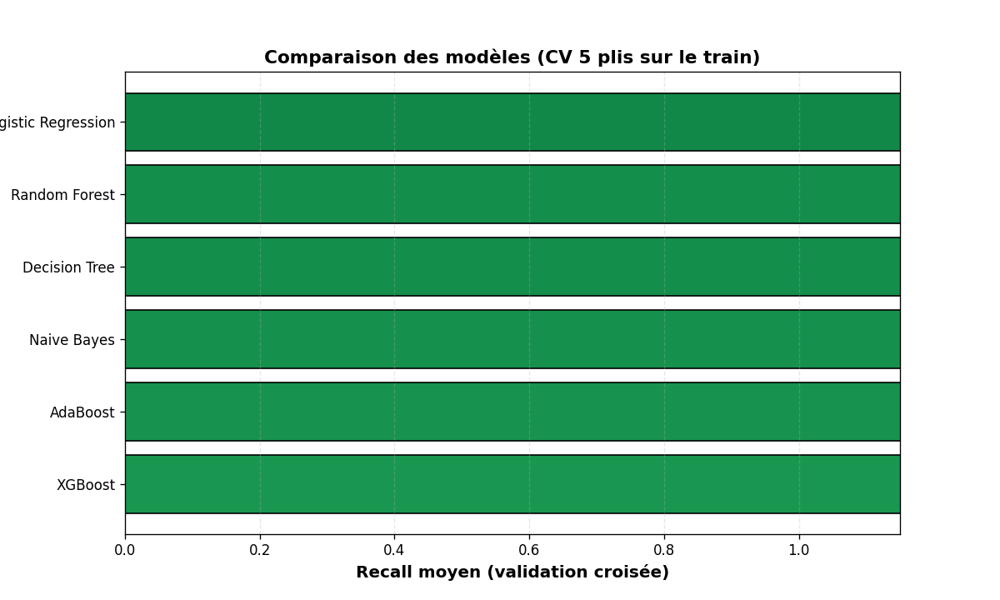
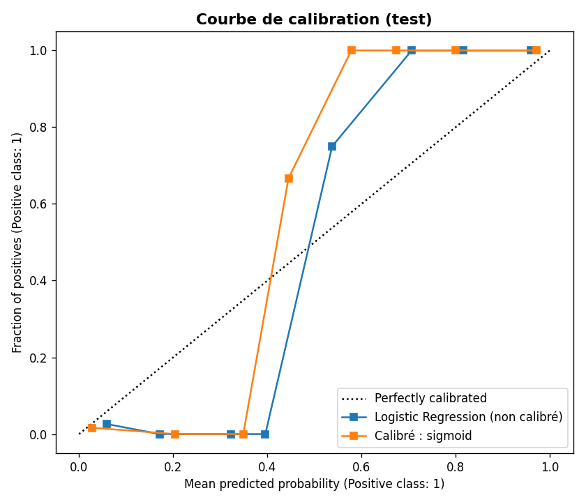
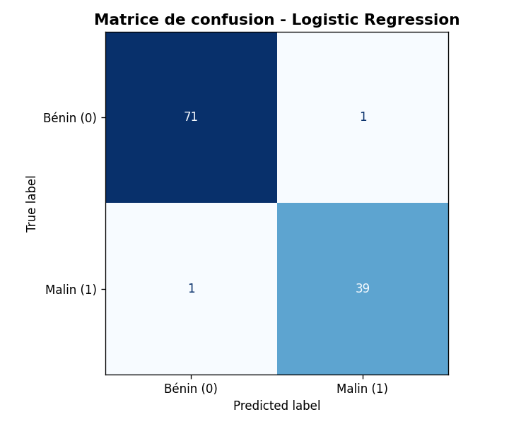
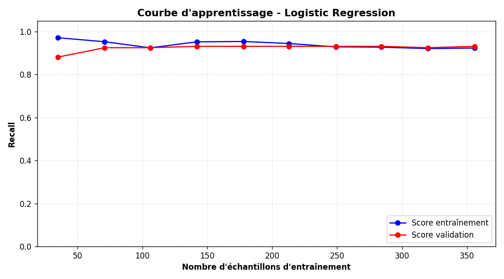

OncoScan
Un projet MLOps complet et open source, de la donnée brute au monitoring en production.
[!IMPORTANT] OncoScan est un projet de démonstration. Le modèle est entraîné sur un petit jeu de données public (569 patients) et n’a aucune valeur clinique : il ne doit jamais servir à une décision médicale. L’objet du projet est la démarche MLOps, pas la performance du modèle.
En bref
OncoScan classe une tumeur mammaire comme bénigne ou maligne à partir de 5 mesures de noyaux cellulaires. Le cas d’usage sert de prétexte pour montrer, avec uniquement des outils open source, ce qu’il faut autour d’un modèle pour qu’il soit fiable, traçable, déployable et surveillé :
| Étape | Ce qui est fait | Outils |
|---|---|---|
| Expérimentation | Comparaison de 6 algorithmes en validation croisée, calibration des probabilités, seuil de décision choisi pour le recall | scikit-learn, XGBoost |
| Traçabilité | Chaque entraînement est enregistré (paramètres, métriques, figures, empreinte des données, commit git) et le modèle est versionné dans un registre | MLflow |
| Qualité | 35 tests automatisés (modèle + API), lint et règles de sécurité | pytest, ruff |
| Service | API d’inférence authentifiée, interface web pour les praticiens, historique en base | FastAPI, Streamlit, PostgreSQL |
| Livraison | Images Docker durcies, scan de vulnérabilités, test de démarrage, publication multi-architecture | Docker, Trivy, GitHub Actions, Docker Hub |
| Production | Métriques techniques, drift des données, performance réelle mesurée grâce aux validations des médecins, alertes | Prometheus, Grafana, Evidently |
Sommaire
- En bref
- Sommaire
- 1. Architecture
- 2. Démarrage rapide
- 3. Données et modèle
- 4. Suivi des expériences avec MLflow
- 5. API d’inférence
- 6. Interface web
- 7. Monitoring
- 8. Tests et qualité
- 9. CI/CD
- 10. Sécurité
- 11. Configuration
- 12. Structure du dépôt
- 13. Dépannage
- 14. Limites et pistes d’amélioration
- 15. Auteur et licence
1. Architecture
flowchart LR
subgraph Entraînement["Entraînement (local)"]
D[(Data/process<br>cancer_select.csv)] --> T[Model/train.py]
T --> R[(MLflow<br>runs + registre)]
T --> J[Save_models/<br>oncoscan_pipeline.joblib + .json]
end
subgraph CI["GitHub Actions"]
J --> C[lint + tests<br>build + Trivy + smoke test]
C --> H[(Docker Hub)]
end
subgraph Prod["docker compose"]
U((Praticien)) --> I[Interface Streamlit<br>:8501]
I -->|POST /predict<br>X-API-Key| A[API FastAPI<br>:8000]
I -->|comptes, historique,<br>validations| P[(PostgreSQL 16)]
A -->|/metrics| PR[Prometheus<br>:9090]
P -->|lecture seule| E[Evidently<br>:8085]
E -->|/metrics| PR
PR --> G[Grafana<br>:3000]
P -->|lecture seule| G
end
H -.->|docker pull| Prod| Service | Rôle | Accès depuis l’hôte |
|---|---|---|
interface |
Application Streamlit : connexion, analyses, historique, validation des diagnostics | http://localhost:8501 |
api |
Inférence FastAPI, modèle embarqué dans l’image | http://127.0.0.1:8000/docs |
postgres |
Comptes praticiens, prédictions, validations | aucun (réseau Docker interne) |
prometheus |
Collecte des métriques et règles d’alerte | http://127.0.0.1:9090 |
grafana |
Dashboards technique et modèle | http://127.0.0.1:3000 |
evidently |
Calcul du drift et de la performance réelle, rapports HTML | http://127.0.0.1:8085 |
La base n’est joignable que par l’interface et les outils de monitoring (réseau db-net, sans accès extérieur). L’API ne voit pas la base : elle n’en a pas besoin.
2. Démarrage rapide
Prérequis : Docker avec Compose v2, Git. Python 3.12 seulement pour entraîner le modèle ou lancer les tests.
git clone https://github.com/Schaphath/MLops-Project-Tuto-Python.git
cd MLops-Project-Tuto-Python
cp .env.example .envRemplacer chaque change-me du .env par une vraie valeur. Pour générer un secret :
python -c "import secrets; print(secrets.token_urlsafe(32))"Lancer l’application seule :
docker compose up -d --buildOu l’application avec toute la stack de monitoring :
docker compose -f docker-compose.yml -f docker-compose.monitoring.yml up -d --buildOuvrir http://localhost:8501. Pour créer le premier compte, mettre ALLOW_REGISTRATION=true dans le .env, relancer, créer les comptes, puis revenir à false.
Pour déployer sans le code source, à partir des images publiées sur Docker Hub, utiliser docker-compose.prod.yml à la place de docker-compose.yml.
3. Données et modèle
Les données
Jeu Breast Cancer Wisconsin (Diagnostic) : 569 ponctions à l’aiguille fine, 30 mesures par image. Après nettoyage (voir Notebook/Analyse-Exploratoire.ipynb), il reste 557 lignes, dont 36 % de tumeurs malignes.
| Fichier | Contenu |
|---|---|
Data/raw/cancer.csv |
Données brutes |
Data/process/cancer_clean.csv |
Après nettoyage, valeurs « worst » uniquement |
Data/process/cancer_select.csv |
Les 5 variables retenues + le diagnostic : c’est le fichier d’entraînement |
Le modèle utilise 5 variables, toutes en version « worst » (moyenne des 3 noyaux les plus atypiques de l’image) :
| Variable | Signification | Bornes acceptées par l’API |
|---|---|---|
perimeter |
Périmètre des noyaux | 40 < x ≤ 250 |
concave_points |
Part du contour présentant des creux | 0 ≤ x ≤ 0,3 |
texture |
Écart-type des niveaux de gris | 5 < x ≤ 50 |
smoothness |
Variation locale du rayon | 0,01 < x ≤ 0,3 |
symmetry |
Symétrie de la forme | 0,05 < x ≤ 0,7 |
Les mêmes bornes sont appliquées à trois endroits : l’API (Pydantic), l’interface (formulaire) et la base (CHECK).
La démarche d’entraînement
Model/train.py suit un protocole qui évite les deux pièges classiques : évaluer sur des données qui ont servi à choisir le modèle, et optimiser une métrique qui n’a pas de sens pour le problème.
- Découpage 80/20 stratifié. Le jeu de test (112 lignes) n’est utilisé qu’une seule fois, à la fin.
- Choix de l’algorithme parmi 6 candidats (régression logistique, arbre, forêt aléatoire, XGBoost, AdaBoost, Naive Bayes) en validation croisée à 5 plis sur le train. Critère : le meilleur recall parmi les modèles qui gardent au moins 90 % de précision.
- Calibration des probabilités (sigmoid) si, et seulement si, elle améliore le score de Brier et la log loss en validation croisée. Un « risque de 30 % » affiché au praticien doit vraiment correspondre à 30 %.
- Seuil de décision choisi pour maximiser le recall à précision ≥ 90 %, au lieu du 0,5 par défaut. Rater une tumeur maligne coûte bien plus cher qu’une fausse alerte.
- Évaluation finale sur le test, sauvegarde du modèle et de sa fiche, traçage dans MLflow.
pip install -r Model/requirements_train.txt
python Model/train.pyRésultats (jeu de test, 112 patients)
Modèle retenu : régression logistique calibrée (sigmoid), seuil 0,352.
| Recall | Précision | F1 | AUC | Brier (avant → après calibration) |
|---|---|---|---|---|
| 0,975 | 0,975 | 0,975 | 0,980 | 0,045 → 0,028 |
Sur les 40 tumeurs malignes du test, une seule est manquée.




La fiche du modèle
À chaque entraînement, Save_models/oncoscan_pipeline.json est écrit à côté du modèle : algorithme, calibration, seuil, variables, version de scikit-learn, date, métriques de test. L’API la sert sur /model et les tests vérifient que le modèle et sa fiche sont cohérents.
4. Suivi des expériences avec MLflow
Chaque exécution de train.py crée un run MLflow contenant :
- les paramètres (algorithme retenu, calibration, seuil, variables, découpage) ;
- les métriques de test et les scores de validation croisée de chacun des 6 candidats ;
- les figures, le rapport de classification et la fiche du modèle ;
- l’empreinte SHA-256 du fichier de données et le commit git : on sait exactement avec quoi un modèle a été produit ;
- le modèle lui-même, inscrit au registre sous le nom
oncoscan(une nouvelle version par entraînement).
Par défaut, tout est stocké en local (mlflow.db et mlruns/, ignorés par git). Pour consulter les expériences :
mlflow ui --backend-store-uri sqlite:///mlflow.dbpuis ouvrir http://127.0.0.1:5000. Pour utiliser un serveur MLflow partagé, définir MLFLOW_TRACKING_URI avant de lancer l’entraînement.
Le fichier Save_models/oncoscan_pipeline.joblib reste la source de vérité pour le déploiement : il est embarqué dans l’image de l’API, donc un tag d’image correspond à un modèle précis.
5. API d’inférence
| Méthode | Route | Authentification | Rôle |
|---|---|---|---|
GET |
/ |
non | Nom, version, statut |
GET |
/health |
non | État du modèle (utilisé par le healthcheck Docker) |
GET |
/model |
non | Fiche du modèle servi |
POST |
/predict |
X-API-Key |
Prédiction |
GET |
/metrics |
non | Métriques Prometheus |
GET |
/docs |
non | Documentation interactive (Swagger) |
curl -s http://127.0.0.1:8000/predict \
-H "X-API-Key: $API_KEY" -H "Content-Type: application/json" \
-d '{"perimeter": 87.46, "concave_points": 0.04781, "texture": 17.77, "smoothness": 0.08474, "symmetry": 0.1812}'{"prediction": "B", "label": "Bénigne", "probability_malignant": 0.0018, "model_version": "2.3.0"}Toute valeur hors bornes, tout champ manquant ou inconnu renvoie 422. Une clé absente ou fausse renvoie 401.
6. Interface web
- Connexion des praticiens (mots de passe hachés avec bcrypt, blocage temporaire après 5 échecs).
- Nouvelle analyse : identifiant patient pseudonymisé et 5 mesures, résultat avec le risque de malignité estimé.
- Historique des 50 dernières analyses du praticien, filtrable et exportable en CSV.
- Validation d’un diagnostic : une fois le résultat d’anatomopathologie connu, le praticien indique le diagnostic réel. Ces validations alimentent le monitoring, qui mesure ainsi la performance réelle du modèle et pas seulement celle du jeu de test.
7. Monitoring
La stack de monitoring (docker-compose.monitoring.yml) se superpose à l’application sans la modifier.
| Ce qu’on surveille | Comment | Où le voir |
|---|---|---|
| Disponibilité, trafic, latence, erreurs de l’API | /metrics lu par Prometheus toutes les 15 s |
Grafana : OncoScan - API |
| Ce que le modèle répond (part de malins, distribution des probabilités) | Métriques métier de l’API | Grafana : OncoScan - API |
| Drift des 5 variables et de la classe prédite par rapport à l’entraînement | Job Evidently, toutes les heures, sur 30 jours glissants | Grafana : OncoScan - Modèle et rapports HTML sur le port 8085 |
| Performance réelle (recall, précision, faux négatifs) | Prédictions comparées aux validations des praticiens | Grafana : OncoScan - Modèle |
Six règles d’alerte sont définies, dont : API indisponible, plus de 5 % d’erreurs, latence p95 > 500 ms, drift sur plus de la moitié des variables, recall réel inférieur à 0,9.
[!NOTE] Grafana a ses propres comptes. On s’y connecte avec
GRAFANA_ADMIN_USER/GRAFANA_ADMIN_PASSWORDdu.env, pas avec un compte de l’application.
Détails, métriques exposées et dépannage : Monitoring/README.md.
8. Tests et qualité
pip install -r Api/requirements_api.txt -r Model/requirements_train.txt -r requirements_dev.txt
ruff check .
pytest| Suite | Ce qui est vérifié |
|---|---|
Tests/test_model.py (16 tests) |
Intégrité des données ; cohérence entre le modèle, sa fiche et l’API (version de scikit-learn, variables, seuil, classes) ; recall ≥ 0,95, précision ≥ 0,90, F1 ≥ 0,90, AUC ≥ 0,95, Brier ≤ 0,07 ; robustesse de l’inférence |
Tests/test_api.py (19 tests) |
Refus de démarrer sans clé ; authentification ; validation des entrées (bornes, champs manquants ou inconnus, types) ; format et justesse des réponses ; exposition des métriques |
Un modèle moins bon que les seuils ne peut donc pas être publié : la CI échoue avant le build des images.
ruff applique les règles de style, d’imports et de sécurité (jeu bandit) définies dans pyproject.toml.
9. CI/CD
flowchart LR
A[push / PR] --> B[Qualité<br>ruff, pytest,<br>compose config]
B --> C1[api]
B --> C2[interface]
B --> C3[evidently]
subgraph build["Build, scan Trivy, smoke test"]
C1
C2
C3
end
build -->|main ou tag vX.Y.Z| D[Publication Docker Hub<br>amd64 + arm64]Le workflow .github/workflows/ci_cd_oncoscan.yml :
- Qualité : lint, 35 tests, compilation, validation des 4 combinaisons de fichiers compose.
- Build et scan de chaque image : rapport Trivy CRITICAL/HIGH, blocage sur toute faille CRITICAL corrigeable, puis démarrage du conteneur sans privilèges jusqu’à l’état
healthy. - Publication sur Docker Hub, uniquement si toutes les images sont validées, sur
main(taglatest) ou sur un tag gitvX.Y.Z(tagX.Y.Z).
Dependabot propose chaque semaine les mises à jour des actions, des dépendances Python et des images de base. scikit-learn est exclu : changer de version impose de réentraîner le modèle.
Publier une version :
git tag v2.3.0
git push origin v2.3.0Secrets GitHub nécessaires : DOCKERHUB_USERNAME et DOCKERHUB_TOKEN (jeton d’accès Docker Hub, pas le mot de passe).
10. Sécurité
- Secrets uniquement dans
.env, jamais versionné ni copié dans les images. - Conteneurs non-root, sans aucune capacité Linux (
cap_drop: ALL,no-new-privileges). - Réseaux séparés : la base n’a aucun accès extérieur, l’API ne la voit pas. Seule l’interface est publiée sur toutes les interfaces ; les autres ports n’écoutent que sur
127.0.0.1. - API : clé comparée en temps constant, entrées strictement validées, aucune donnée patient dans les logs ni dans les métriques.
- Interface : bcrypt, protection contre la force brute, même temps de réponse qu’un compte existe ou non, inscription fermée par défaut.
- Base : contraintes
CHECKsur toutes les mesures, identifiants patients pseudonymisés, historique jamais supprimé (ON DELETE RESTRICT), utilisateur en lecture seule pour le monitoring. - Chaîne de livraison : versions de dépendances figées, action Trivy épinglée sur un commit, scan à chaque build.
Rotation des secrets
Si un secret a fuité (par exemple un .env poussé par erreur), le changer partout :
# 1. Nouveau mot de passe de la base, appliqué à la base existante
docker compose exec postgres psql -U oncoscan -d oncoscan -c "ALTER ROLE oncoscan PASSWORD 'NOUVEAU_MOT_DE_PASSE';"
# 2. Reporter ce mot de passe dans DB_PASSWORD, générer une nouvelle API_KEY dans le .env
# 3. Recréer les conteneurs pour qu'ils lisent le nouveau .env
docker compose -f docker-compose.yml -f docker-compose.monitoring.yml up -dEn production, un HTTPS devant l’interface (reverse proxy) est indispensable : sans lui, les mots de passe circulent en clair.
11. Configuration
Toutes les variables sont décrites dans .env.example.
| Variable | Utilisée par | Rôle |
|---|---|---|
VERSION |
build, images | Tag des images et version affichée du modèle |
DOCKERHUB_USER |
compose | Compte Docker Hub des images |
DB_NAME, DB_USER, DB_PASSWORD |
postgres, interface | Base de données |
API_KEY |
api, interface | Clé partagée X-API-Key |
LOG_LEVEL |
api, evidently | Niveau de log |
ALLOW_REGISTRATION |
interface | Autoriser la création de comptes |
APP_TIMEZONE, MODEL_NAME |
interface | Affichage |
GRAFANA_ADMIN_USER, GRAFANA_ADMIN_PASSWORD |
grafana | Compte administrateur Grafana |
MONITORING_DB_USER, MONITORING_DB_PASSWORD |
grafana, evidently | Accès en lecture seule à la base |
EVIDENTLY_WINDOW_DAYS, EVIDENTLY_INTERVAL_SECONDS, EVIDENTLY_MIN_ROWS |
evidently | Fenêtre, fréquence et volume minimum pour le drift |
PROMETHEUS_RETENTION |
prometheus | Durée de conservation des métriques |
MLFLOW_TRACKING_URI |
train.py | Serveur MLflow (vide : base locale) |
12. Structure du dépôt
.
├── Api/ API FastAPI (api.py, Dockerfile, dépendances)
├── Interface/ Application Streamlit (app.py, style.css, Dockerfile)
├── Model/ Entraînement (train.py, dépendances)
├── Save_models/ Modèle servi + sa fiche JSON
├── Data/ Données brutes, nettoyées, sélectionnées
├── Notebook/ Analyse exploratoire
├── Database/ Schéma PostgreSQL et migration
├── Monitoring/ Prometheus, Grafana, job Evidently, utilisateur lecture seule
├── Tests/ Tests du modèle et de l'API
├── Image_models/ Figures générées par train.py
├── .github/ Workflow CI/CD et Dependabot
├── docker-compose.yml Application, images construites depuis le code
├── docker-compose.prod.yml Application, images tirées de Docker Hub
├── docker-compose.monitoring.yml Stack de monitoring (se superpose aux deux précédents)
├── pyproject.toml Configuration de pytest et ruff
├── requirements_dev.txt Outils de test et de lint
└── .env.example Modèle de configuration13. Dépannage
| Symptôme | Cause probable | Solution |
|---|---|---|
required variable ... is missing a value |
Variable absente du .env |
Compléter le .env à partir de .env.example |
| L’interface affiche « service de comptes indisponible » | Mot de passe du .env différent de celui de la base |
La base garde le mot de passe de sa création : voir Rotation des secrets |
api reste unhealthy |
Modèle absent ou API_KEY vide |
docker compose logs api |
| Grafana refuse la connexion | Mauvais identifiant (compte OncoScan au lieu de admin) ou mot de passe changé après le premier démarrage |
Voir Monitoring/README.md |
| Panneaux de drift vides | Moins de 30 prédictions sur 30 jours | Normal : le drift n’a pas de sens sur trop peu de données |
| Panneaux de performance réelle vides | Aucune analyse validée par un praticien | Valider des diagnostics dans l’onglet Historique |
| Nouvelles colonnes absentes de la base | schema.sql ne s’exécute qu’à la création du volume |
Appliquer Database/migration.sql |
14. Limites et pistes d’amélioration
- Données : 557 patients d’un seul centre, collectés dans les années 1990. Aucune généralisation n’est possible ; le projet ne prétend pas en faire.
- Réentraînement : il reste manuel. Étape suivante naturelle : le déclencher quand le drift ou la baisse du recall réel dépasse un seuil, puis promouvoir le modèle dans le registre MLflow après validation.
- Alertes : elles sont évaluées par Prometheus mais pas encore envoyées (Alertmanager vers e-mail ou Slack).
- Gestion des comptes : pas d’interface d’administration ni de rôles.
- HTTPS : à placer devant l’interface pour un vrai déploiement.
15. Auteur et licence
Projet conçu et réalisé par Madiba.
Distribué sous licence MIT.